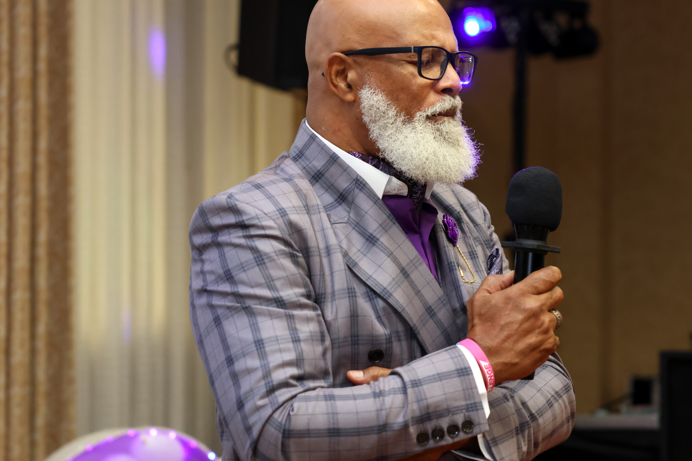

Event videography
Cinematic coverage for celebrations, parties, community events, and milestone gatherings.
If you are looking for a videographer in Stonecrest, GA, Media Circle provides premium on-location event videography designed for clients who want more than basic footage. We create polished, modern video coverage for celebrations, corporate events, community gatherings, prom send-offs, and branded experiences.

A strong event video should do more than document what happened. It should preserve atmosphere, movement, energy, and emotion in a way that feels cinematic and professional.
Media Circle serves Stonecrest with premium videography built for both memories and marketing. Whether you need a short highlight film, recap coverage, or content that helps showcase your event online, we focus on clean visuals, intentional storytelling, professional communication, and polished delivery.
Our team provides convenient on-location coverage throughout Stonecrest and nearby Lithonia. We are a strong fit for birthdays, private events, community functions, and upscale celebrations, and we also serve nearby areas including Lithonia, Decatur, and East Metro Atlanta. You get a responsive team, a clean on-site presence, and video content that feels ready to share, post, promote, and remember.
Media Circle creates modern event films and recap videos for private clients, schools, organizations, and brands.
Cinematic coverage for celebrations, parties, community events, and milestone gatherings.
Professional video coverage for corporate functions, launches, networking events, and branded experiences.
Short, polished event films designed to capture the best moments with energy and clarity.
Short-form video coverage built for modern sharing, event recaps, and online promotion.
Each collection includes licensed music, professional color grading, private online delivery, and downloadable files.
Perfect for short parties, baby showers, and intimate birthday gatherings.
Ideal for graduation parties, milestone birthdays, and anniversary celebrations.
Built for large parties, all-day celebrations, and events with multiple key moments.
Ideal for large milestone celebrations and multi-generational reunions with 100 or more guests.
When you book Media Circle, you can expect professional communication, clear planning before the event, efficient on-site coverage, clean edited delivery, and a premium final product. We film with the end result in mind so your video feels organized, watchable, and useful.
For personal events, that means preserving the feeling of the day. For business events, it means creating content that supports marketing, social sharing, and brand visibility.
Reach out to Media Circle for premium on-location coverage that captures your event with energy, clarity, and professionalism.
View recent Media Circle photography, videography, and event coverage.
Pair your video coverage with professional event photography.
Explore photography coverage for events and celebrations in Stonecrest.
Add guest engagement with a 360 video booth or classic booth experience.